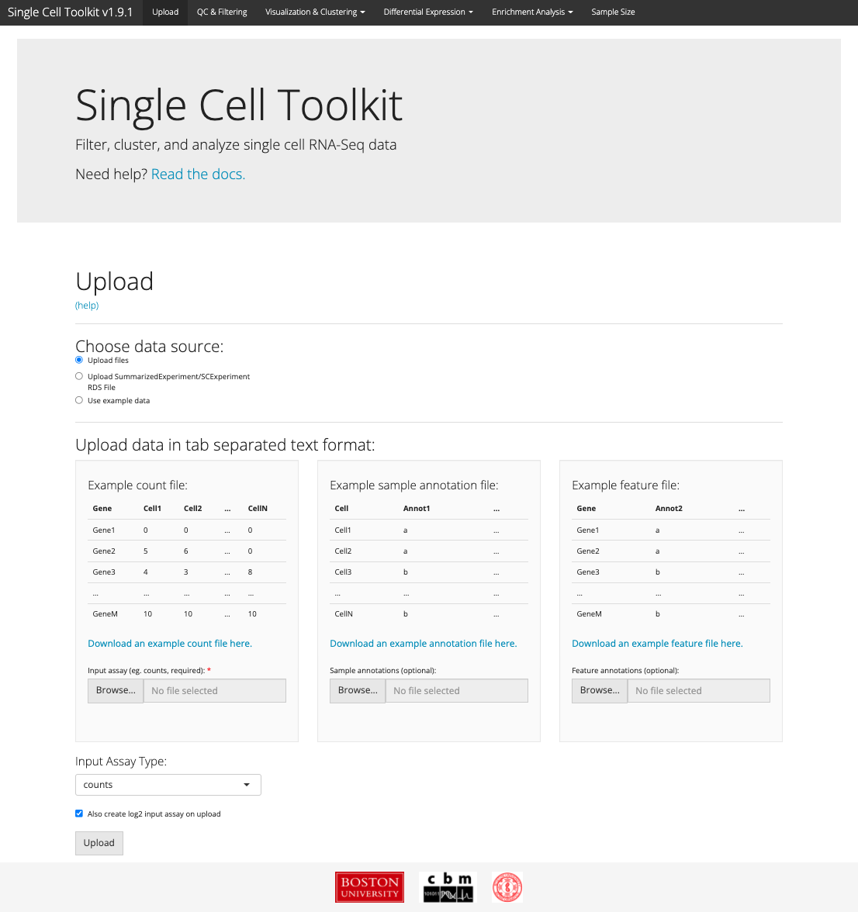

vignettes/v03-tab01_Upload.Rmd
v03-tab01_Upload.Rmd
The upload tab is the first tab displayed when the singleCellTK is loaded. Here, you can upload a matrix of data along with annotation information to explore within the toolkit.
Under the hood, the SCTK created a SCtkExperiment object which stores one or more matrix of data along with a column annotation data frame and a row annotation data frame. The SCtkExperiment is an extension of the SingleCellExperiment object, but is fully backward compatable with the SingleCellExperiment.
You can also directly upload a SingleCellExperiment or SCtkExperiment from a previous session, from another software tool, or one that you have previously created from the console.
In addition to SingleCellExperiment or SCtkExperiment objects (in .RDS format), the SCTK also accepts tab-delimited files on the upload tab. You must provide a matrix of count data, and you can optionally provide both sample and feature annotation files as well. All files must have the same cells or genes and must be in the same order.
The input assay should be a matrix with genes as rows and samples (cells) as columns. For most users, the input assay will be a matrix of counts, but if the assay data being uploaded is not a count matrix, you can change the input assay type with the “Input Assay Type” drop-down. Download an example count file here.
| Gene | Cell1 | Cell2 | … | CellN |
|---|---|---|---|---|
| Gene1 | 0 | 0 | … | 0 |
| Gene2 | 5 | 6 | … | 0 |
| Gene3 | 4 | 3 | … | 8 |
| … | … | … | … | … |
| GeneM | 10 | 10 | … | 10 |
Sample annotations should be a table with samples (cells) as rows and annotations as columns. Download an example annotation file here.
| Cell | Annot1 | … |
|---|---|---|
| Cell1 | a | … |
| Cell2 | a | … |
| Cell3 | b | … |
| … | … | … |
| CellN | b | … |
Optional feature annotations should be a table with genes as rows and gene annotations as columns. Download an example feature file here.
| Gene | Annot2 | … |
|---|---|---|
| Gene1 | a | … |
| Gene2 | a | … |
| Gene3 | b | … |
| … | … | … |
| GeneM | b | … |
You can also load example data sets on the upload tab for testing. Example datasets have a small amount of annotation/description in the app, but for more information see the package documentation for details about the available datasets.
## R version 4.1.2 (2021-11-01)
## Platform: x86_64-apple-darwin17.0 (64-bit)
## Running under: macOS Big Sur 10.16
##
## Matrix products: default
## BLAS: /Library/Frameworks/R.framework/Versions/4.1/Resources/lib/libRblas.0.dylib
## LAPACK: /Library/Frameworks/R.framework/Versions/4.1/Resources/lib/libRlapack.dylib
##
## locale:
## [1] en_US.UTF-8/en_US.UTF-8/en_US.UTF-8/C/en_US.UTF-8/en_US.UTF-8
##
## attached base packages:
## [1] stats graphics grDevices utils datasets methods base
##
## other attached packages:
## [1] BiocStyle_2.22.0
##
## loaded via a namespace (and not attached):
## [1] rstudioapi_0.13 knitr_1.38 magrittr_2.0.3
## [4] R6_2.5.1 ragg_1.2.2 rlang_1.0.2
## [7] fastmap_1.1.0 stringr_1.4.0 tools_4.1.2
## [10] xfun_0.30 cli_3.2.0 jquerylib_0.1.4
## [13] systemfonts_1.0.4 htmltools_0.5.2 yaml_2.3.5
## [16] digest_0.6.29 rprojroot_2.0.3 pkgdown_2.0.2
## [19] bookdown_0.25 textshaping_0.3.6 BiocManager_1.30.16
## [22] purrr_0.3.4 sass_0.4.1 fs_1.5.2
## [25] memoise_2.0.1 cachem_1.0.6 evaluate_0.15
## [28] rmarkdown_2.14 stringi_1.7.6 compiler_4.1.2
## [31] bslib_0.3.1 desc_1.4.1 jsonlite_1.8.0